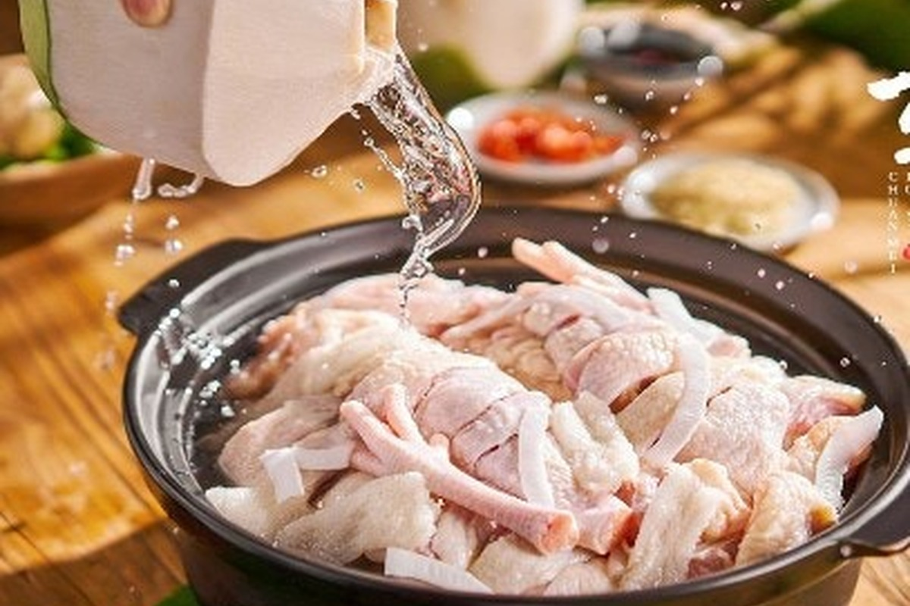
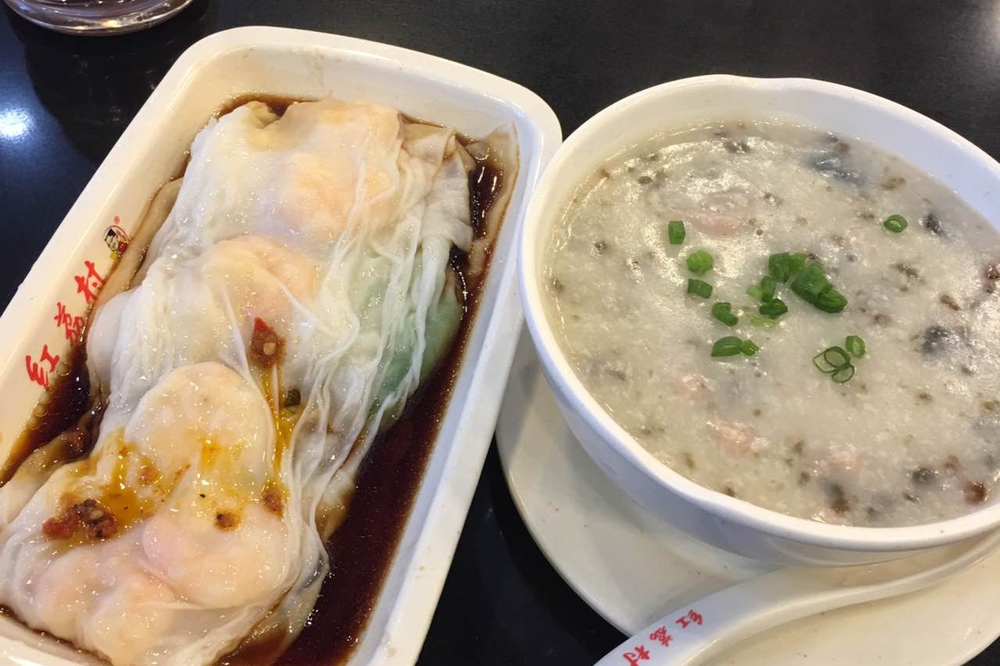
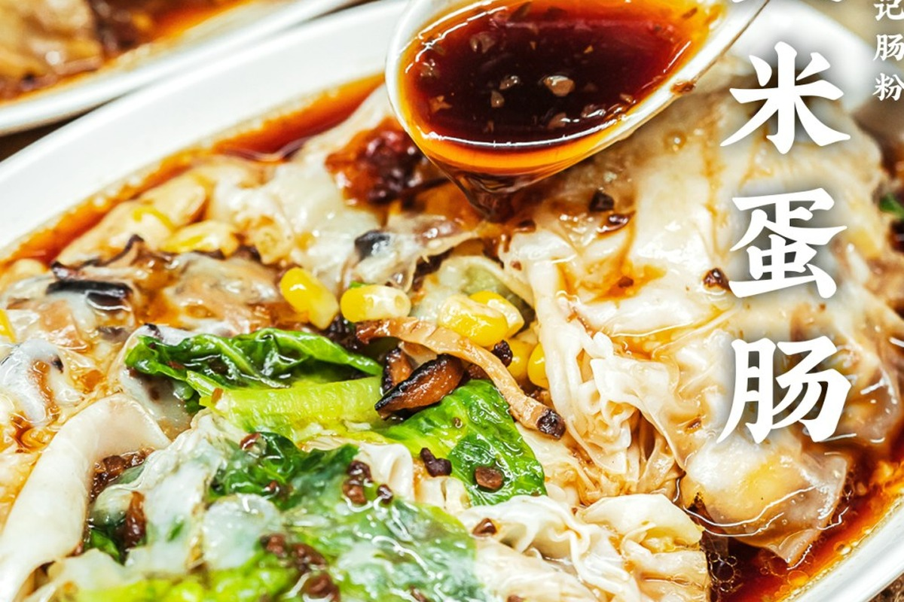
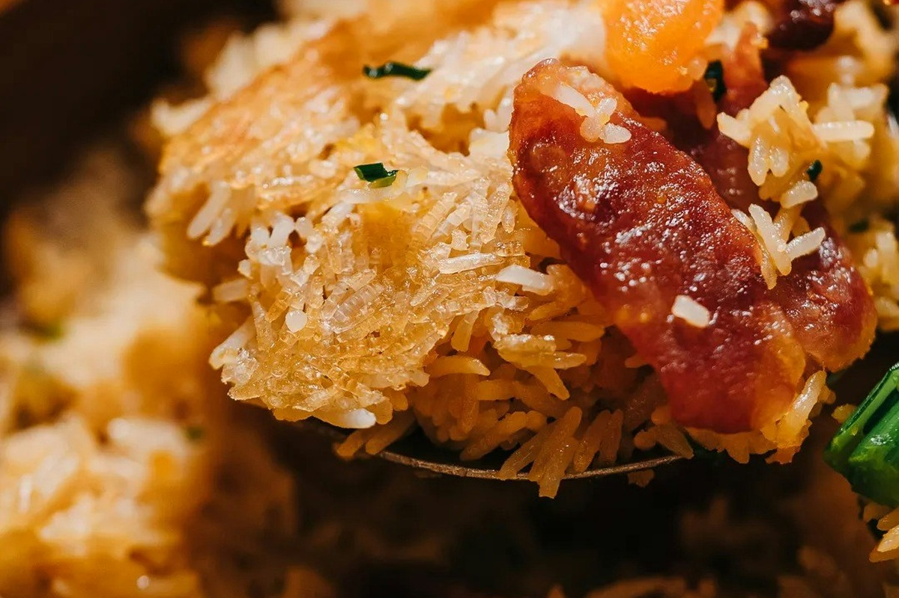
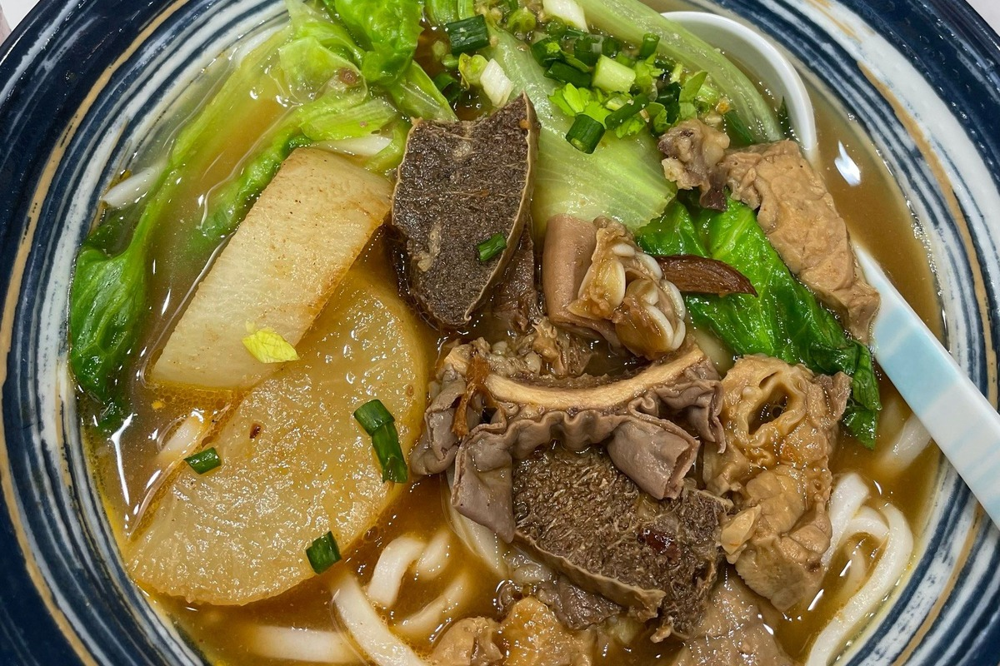
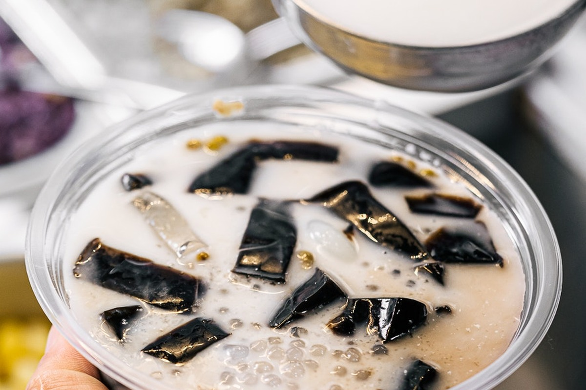
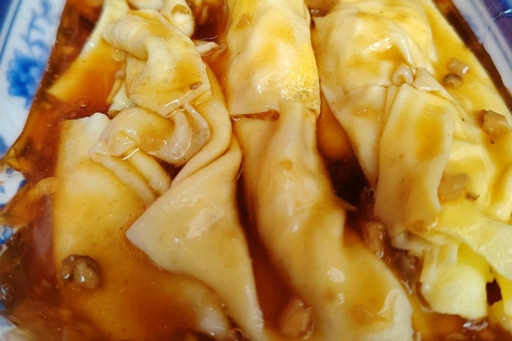

🍵 广式早茶 · 饮茶叹世界
深圳人的早晨，从一盅两件开始

蘩楼
百年传承西关文化风情，广式茶点品牌，复古民国风装修，人气打卡酒樓。推荐：明虾红米肠、芦笋虾皇饺、金牌红烧乳鸽。
明虾红米肠 ¥26 · 灌汤小笼包 ¥29 · 凤眼海胆墨鱼饺 ¥36

陶陶居
📍 全深圳10间分店 · 金光华广场店：罗湖区人民南路2028号7层（国贸站B出口）
百年广州老字号进驻深圳，传统 x 新意。招牌酥皮水牛奶菠萝包、冰镇咕噜肉、榴莲天鹅酥，打卡够靓味道有诚意。
冰镇咕噜肉 ¥68 · 酥皮水牛奶菠萝包 ¥32 · 榴莲天鹅酥 ¥38

点都德
📍 深圳多间分店 · 华强北店：福田区华强北路1019号（华强北站）
广州餐饮巨头，传统手工点心，适合一大家子饮茶。经典虾饺、红米肠、沙爹金钱肚，水准稳定。
金沙红米肠 ¥32 · 虾饺皇 ¥36 · 沙爹金钱肚 ¥28

大汤家 · 靓汤早茶
📍 福田区金田路2030号卓越世纪中心负1层（会展中心站E出口）
¥36.9 一盅靓汤加两份点心！福田口岸一个地铁站直达，超值之选。新鲜现炖汤水配手工点心。
¥36.9 单人套餐（汤+2点心） · ¥59.9 双人套餐


🍳 经典必吃 · 深圳味道
牛肉火锅 · 椰子鸡 · 粥粉面 · 烧腊 · 海鲜
🐮 潮汕牛肉火锅


🥥 椰子鸡火锅

润园四季椰子鸡
深圳最早开创椰子鸡市场的品牌，2009年创立，23+分店。野生竹笙椰子鸡必试。
竹笙椰子鸡 · 腊味煲仔饭 · 珍珠马蹄


🥣 粥粉面/在地早餐

红荔村肠粉
深圳本地常见的肠粉连锁，胜在稳定、开得早，适合住汉普斯酒店时当轻早餐。
鲜虾肠粉 · 牛肉肠粉 · 皮蛋瘦肉粥

元记肠粉美食店
南头街坊向小店，早上现磨米浆，适合湾悦S酒店住客在南头古城日前后安排。
牛肉肠粉 · 鸡蛋肠粉 · 艇仔粥

科技园早餐档
不特意跨区，找上班族早餐档最地道：热豆浆、现炸油条、肠粉、炒粉都能快吃快走。
豆浆油条 · 肠粉 · 鸡蛋灌饼 · 炒粉
🦆 粤式烧腊/乳鸽


🦀 海鲜

观蚝·海鲜（海岸城店）
📍 南山区文心五路33号海岸城购物中心L5层515铺（后海站）
后海路线最顺的生猛海鲜粤菜，现点现捞，适合人才公园或深圳湾前后的晚餐。
生蚝 · 东星斑 · 避风塘海鲜 · 海鲜粥

辉记炭烧海鲜大排档
福田老牌炭烧海鲜，适合第6天华强北/深圳之眼后想专门吃皮皮虾时安排。
炭烧濑尿虾 · 炭烧九节虾 · 海鲜粥

蛇口海鲜市场
著名的蛇口渔港海鲜市场，自选皮皮虾、蟹、贝类后到餐厅加工，新鲜又划算。
椒盐皮皮虾 · 蒜蓉粉丝蒸扇贝 · 清蒸鱼 · 人均¥150-250
🍗 鸡煲/煲仔类

洪大厨鸡煲
招牌石橄榄鸡煲，嫩滑文昌鸡，汤底香浓带微甜。潮汕生腌同样出色。
石橄榄鸡煲 · 潮汕生腌 · 炭火串烧

叹佬鸡煲
📍 深圳市罗湖区东门老街彩虹6号美食城负1楼（老街站F出口）
港人和本地人心中的香辣鸡煲首选，整只鸡份量十足。加汤后煮鲍鱼生蚝同样美味。
香辣鸡煲 · 鲍鱼鸡煲 · 公仔面收尾

西关老阿婆·牛杂煲
📍 南山区南海大道2163号来福士广场L4层（南油/南山书城一带）
主打炭火牛腩牛杂煲，份量十足，炆得入味。比跑东门顺路，适合南山 Food Hunting 晚餐。
牛腩牛杂煲 · 萝卜 · 配面食

顺德公猪肚鸡·煲仔饭
📍 南山区南山大道2009号亿利达村101号（近南头古城/桃园）
南头古城附近的顺路选择，胡椒猪肚鸡暖胃，明火煲仔饭有饭焦，适合换酒店当天或古城日。
腊味煲仔饭 · 深海黄鱼煲仔饭 · 胡椒猪肚鸡
🍿 街头小吃 · 扫街必食
¥6起吃遍深圳街头美味

港式喷泉牛杂（南头古城）
古城里适合少量多样的街头小吃，牛杂、萝卜和鱼蛋比跑远吃网红小吃更顺。
牛杂 · 萝卜 · 鱼蛋 · 辣椒酱少放

海兰清补凉
十多年街坊小店，清补凉和海南腌粉都适合古城小吃日收尾。
椰汁清补凉 · 海南腌粉 · 少冰少甜



🍪 甜品糖水 · 甜蜜时光
新派糖水 · 网红烘焙 · 日式甜品

回春调茶
中式药铺风格的凉茶糖水店，开心果糊、龟苓膏是招牌。还有最大胆的"五指毛桃柠檬茶"。
开心果糊 ¥25 · 龟苓膏 ¥18 · 五指毛桃柠檬茶 ¥15


鲍师傅糕点
📍 深圳12家直营门店 · 领展中心城店：福田区福华一路3号G层
无人不知的排队名店！招牌肉松小贝外层铺满肉松和海苔，中间夹沙拉酱，咸甜交织。买来做手信绝不出错。
海苔肉松小贝 ¥32/斤 · 蟹黄肉松小贝 ¥35/斤

KUMO KUMO / the Roll'ING
KUMO KUMO的芝士蛋糕入口即溶，the Roll'ING的手作瑞士卷是回港必买的手信之一。
KUMO原味芝士蛋糕 ¥39 · the Roll'ING瑞士卷 ¥49

酥大兴 · 新国潮糕点
人气糕点品牌，芋泥流沙泡芙¥6已是人气品项，外酥内绵密爆馅效果。紫米芋泥盒子、手工蛋挞都值得一试。
芋泥流沙泡芙 ¥6 · 紫菜肉松小贝 ¥11 · 紫米芋泥盒子 ¥20
🎁 必买手信 · 满载而归
回港回新前记得扫货

📍 按行程就近搜寻美食
围绕两间酒店、Study Trip 晚间动线和保留景点安排
🏨汉普斯酒店 / 科技园 / 万象天地
- 红荔村肠粉（科技园店）早餐：肠粉、粥；适合第1-4天住汉普斯时快吃
- 科技园早餐档豆浆油条、肠粉、炒粉；用地图搜“豆浆油条 科技园”
- 润园四季椰子鸡第一晚椰子鸡＋腊味煲仔饭，尽量选南山/海岸城附近分店
- 万象天地 Food Hunting第1天早午餐或晚间散步，适合轻松补餐
🌊后海 / 海岸城 / 人才公园
- 大目牛肉火锅（海岸城店）第2天晚餐：吊龙、匙仁、牛肉丸、粿条
- 潮发潮汕牛肉店（海岸城）后海站附近，适合替代八合里找本地牛肉火锅
- 观蚝·海鲜（海岸城店）生猛海鲜粤菜；人才公园/深圳湾前后最顺
- 西关老阿婆牛腩牛杂煲（来福士）南油/南山书城方向，适合第3天南山 Food Hunting
🏮湾悦S酒店 / 南头古城 / 前海
- 元记肠粉美食店大新新村；第5/8天早午餐：石磨肠粉、粥
- 港式喷泉牛杂（南头古城）古城小吃：牛杂、鱼蛋，少量多样
- 顺德公猪肚鸡·煲仔饭（南山大道店）煲仔饭＋猪肚鸡；换酒店当天最顺
- 海兰清补凉南头/中山公园一带，适合古城日糖水收尾
🔌华强北 / 岗厦 / 福田 CBD
- 点都德（华强北店）第6天早餐/午餐备选：红米肠、金钱肚
- 华强北地下美食街快吃：牛杂、云吞面、烧鹅饭、猪脚饭
- 辉记炭烧海鲜大排档皮皮虾/濑尿虾；想吃海鲜时放第6天晚餐
- 大汤家·靓汤早茶会展中心站附近，适合福田口岸/岗厦线
🎡龙岗 / 龙华 / 欢乐港湾 / 机场线
- 龙岗万达 Food Hunting第7天午餐：客家菜、烧鹅、牛肉丸粉，就地解决
- 光明招待所光明乳鸽是必吃级，但离路线较远；第7天只在体力允许时打车去
- 新梅园茶餐厅龙华清湖站；若后浪新天地后想吃平价点心可搜就近分店
- 欢乐港湾轻粤菜第8天飞行前：粥粉面或烧鹅饭，不挑战大量海鲜
🛒 实用贴士 · 食唔嬲
港人/游客北上觅食指南
💡 贴士清单
- 1 茶位与餐具费：深圳大部分餐厅会按人头收费（约¥2-8），通常包含茶水、纸巾或包装餐具。如果你不需要纸巾，可以要求退回费用。
- 2 避峰用餐：周末建议在 11:30 前或 17:30 前到达热门餐厅。下午茶时间（2pm-5pm）许多网红手信店人潮较少。
- 3 扫码点餐：入座后扫描桌上 QR Code 点餐。部分餐厅需要关注微信公众号，点完餐后可取消关注。
- 4 必备App：大众点评（看评价+排队取号）、美团（外卖）、微信/支付宝（支付）、深圳地铁（乘车码）、百度地图。
- 5 支付方式：微信支付和支付宝几乎覆盖所有餐厅，备少量现金以应不时之需。
- 6 微信取号：热门餐厅（特别是蘩楼、陶陶居）建议提前在公众号取号，避免现场排队1小时+。
- 7 路线建议：前4晚围绕汉普斯/科技园/后海；换到湾悦S后优先南头古城、前海、欢乐港湾；罗湖和盐田不顺路，除非特别想吃再单独加。
- 8 预算参考：扫街小食 ¥10-30/份，茶楼人均 ¥80-150，火锅人均 ¥100-200，海鲜人均 ¥150-300。